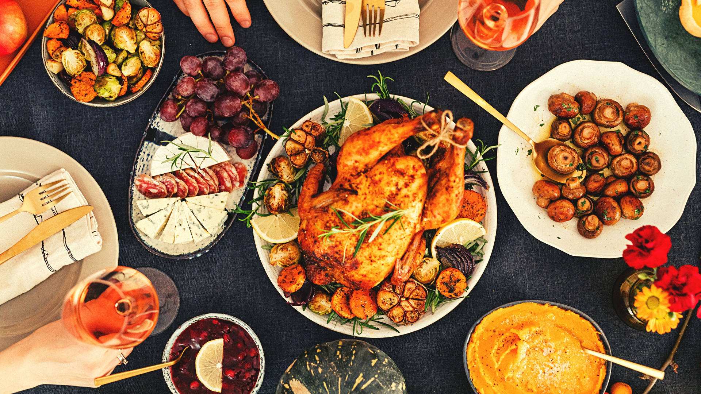

Cooking and Food
Food and cooking have been central to human culture and survival since ancient times. This exhibition explores the rich history of culinary traditions and the evolution of food preparation techniques from around the world.
From traditional methods passed down through generations to innovative cooking technologies, this exhibition showcases the diversity and creativity of global cuisine. Discover unique and special food products, as well as explore the artistry of international kitchens and menus.
Featured Food Artists
Chef Doe
Chef Doe is renowned for his innovative fusion cuisine, blending flavors from around the world to create tantalizing dishes.
Chef Smith
Chef Smith specializes in farm-to-table cooking, emphasizing fresh, locally sourced ingredients in her delicious recipes.
Chef Johnson
Chef Johnson's culinary creations are known for their artistic presentation and bold flavors, making every meal an unforgettable experience.